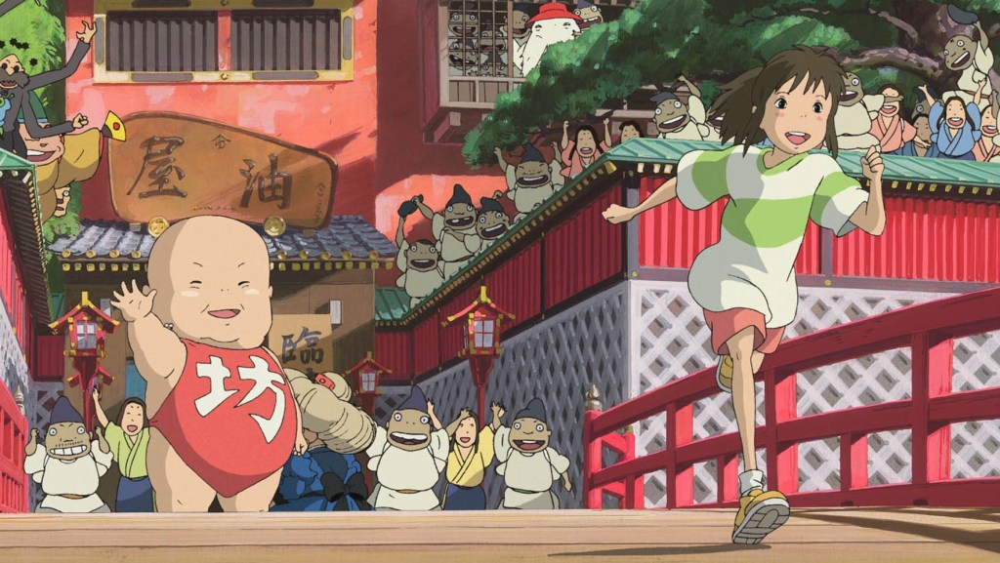

“Spirited Away” and the Sophistication of Childhood
In the garden of wonderments that is the body of work by Japanese animation master Hayao Miyazaki, his 2001 gem Spirited Away is at once one of his most accessible films to a Western audience and the one most distinctly rooted in Japanese culture and lore. The tale of Chihiro, a 10-year-old girl who resents being moved away from all her friends, only to find herself working in a bathhouse for the gods, doesn’t just use its home country’s fraught relationship with deities as a backdrop. It takes an Alice in Wonderland-style narrative as a springboard to deal with the subject head on.
Studio Ghibli
My favorite Films of Studio Ghibli
- ‘Princess Mononoke’ (1997)
- ‘Princess Mononoke’ (1997)
- ‘My Neighbor Totoro’
- ‘Porco Rosso’
- ‘Castle in the Sky’
- ‘Howl’s Moving Castle’
- ‘Pom Poko’
- ‘Kiki’s Delivery Service’
Other movies of Studio Ghibli
There are so many moving parts here, from both a thematic and technical point of view, that pinpointing what makes Spirited Away stand out from an already outstanding body of work becomes as challenging as a meeting with Yubaba. But I think it comes down to an ability to deal with heady, complex subject matter from a 10-year-old’s perspective without diluting or lessening its resonance. Miyazaki has made a loopy, demanding work of art that asks your inner child to come out and play. There are few high-wire acts in all of moviedom as satisfying as that.